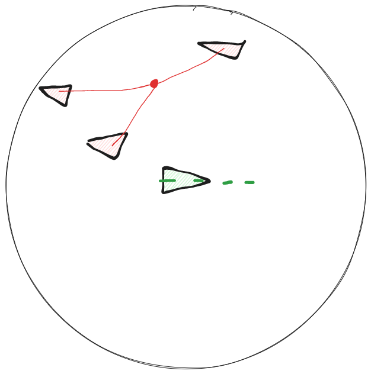
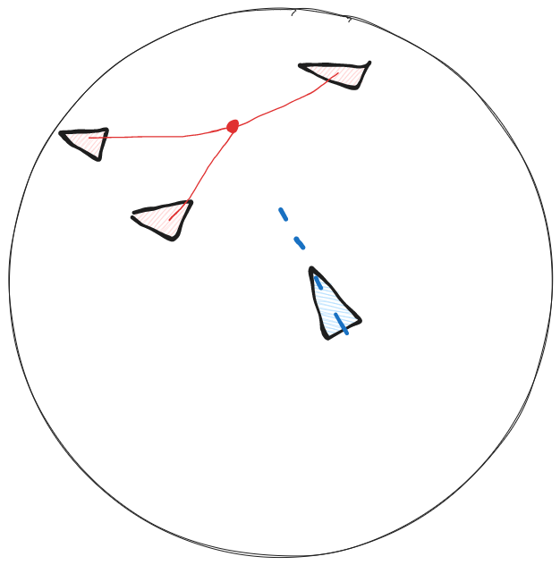

Cohesion
cohesion is the force that pulls the boids together. it takes the average position of all the boids around it and point tward that.
 
Now that we have our system for reading the boid's neighbours and changing it's velocity, it will be quite east to implement the other 2 forces
first lets add a new constant
#![allow(unused)] fn main() { ... const BOID_SPEED: f32 = 90.0; const BOID_VISION: f32 = 80.0; const ALIGNMENT_FORCE: f32 = 0.2; const COHESION_FORCE: f32 = 0.2; ... }
then in our flocking system we count up and divide to get the average neighbour position.
#![allow(unused)] fn main() { ... for (boid_a, transform_a, _velocity_a) in query.iter() { let position_a = transform_a.translation; let mut neighbour_count: u32 = 0; let mut average_velocity = Vec3::ZERO; let mut average_neighbour_position = Vec3::ZERO; for (boid_b, transform_b, velocity_b) in query.iter() { if boid_a == boid_b {continue}; let position_b = transform_b.translation; if position_a.distance(position_b) < BOID_VISION { neighbour_count += 1; average_velocity += velocity_b.0; average_neighbour_position += position_b }; }; if neighbour_count == 0 {continue}; average_velocity /= Vec3::splat(neighbour_count as f32); average_neighbour_position /= Vec3::splat(neighbour_count as f32); ... }; }
to find a vector between two points, all we gotta do is subtract one position from another:


as you can see, the vector posb - posa gives us a vector from the point and b.
That is the vector we will put in our instruction.
#![allow(unused)] fn main() { fn flocking_system( mut query: Query<(Entity, &Transform, &mut Velocity)> ){ let mut queue: Vec<Intruction> = vec![]; for (boid_a, transform_a, _velocity_a) in query.iter() { let position_a = transform_a.translation; let mut neighbour_count: u32 = 0; let mut average_velocity = Vec3::ZERO; let mut average_neighbour_position = Vec3::ZERO; for (boid_b, transform_b, velocity_b) in query.iter() { if boid_a == boid_b {continue}; let position_b = transform_b.translation; if position_a.distance(position_b) < BOID_VISION { neighbour_count += 1; average_velocity += velocity_b.0; average_neighbour_position += position_b }; }; if neighbour_count == 0 {continue}; average_velocity /= Vec3::splat(neighbour_count as f32); average_neighbour_position /= Vec3::splat(neighbour_count as f32); let towards_neighbours = average_neighbour_position - position_a; let alignment = Intruction { boid: boid_a, direction: average_velocity, factor: ALIGNMENT_FORCE, }; queue.push(alignment); let cohesion = Intruction { boid: boid_a, direction: towards_neighbours, factor: COHESION_FORCE, }; queue.push(cohesion); }; for (boid, _transform, mut velocity) in query.iter_mut() { for instruction in queue.iter() { if instruction.boid != boid {continue}; let speed = velocity.0.length(); velocity.0 += instruction.direction * Vec3::splat(instruction.factor); velocity.0 = velocity.0.normalize() * speed; } } } }
^I also renamed "instruction" to "alignment" to be more readable.
here is our program so far:
use bevy::prelude::*; use bevy::render::{render_resource::PrimitiveTopology, mesh::Indices}; use rand::Rng; const BOID_SPEED: f32 = 90.0; const BOID_VISION: f32 = 80.0; const ALIGNMENT_FORCE: f32 = 0.2; const COHESION_FORCE: f32 = 0.2; fn main() { App::new() .add_plugins(DefaultPlugins) .add_startup_system(setup_camera) .add_startup_system(spawn_boids_system) .add_system(movement_system) .add_system(wrap_around_system) .add_system(flocking_system) .run(); } fn setup_camera( mut commands: Commands ) { commands.spawn(Camera2dBundle::default()); } fn create_triagle_mesh() -> Mesh { let mut mesh = Mesh::new(PrimitiveTopology::TriangleList); mesh.insert_attribute(Mesh::ATTRIBUTE_POSITION, vec![ [0.0, 2.0, 0.0], [-1.0, -1.0, 0.0], [1.0, -1.0, 0.0], ]); mesh.set_indices(Some(Indices::U32(vec![0,1,2]))); mesh } #[derive(Component)] struct Velocity(Vec3); fn spawn_boids_system( mut commands: Commands, mut meshes: ResMut<Assets<Mesh>>, mut materials: ResMut<Assets<ColorMaterial>>, window_query: Query<&Window>, ){ let mut random_thread = rand::thread_rng(); let window = window_query.get_single().unwrap(); for _ in 0..=50 { commands.spawn(( ColorMesh2dBundle { material: materials.add(ColorMaterial::from(Color::PURPLE)), mesh: meshes.add(create_triagle_mesh()).into(), transform: Transform { scale: Vec3::splat(10.0), translation: Vec3 { x: random_thread.gen_range(-window.width()..window.width()), y: random_thread.gen_range(-window.height()..window.height()), z: 0.0, }, ..default() }, ..default() }, Velocity(Vec3{ x: random_thread.gen_range(-1.0..1.0), y: random_thread.gen_range(-1.0..1.0), z: 0.0, }.normalize() * Vec3::splat(BOID_SPEED)) )); } } fn movement_system( time: Res<Time>, mut query: Query<(&mut Transform, &Velocity)> ) { for (mut transform, velocity) in query.iter_mut() { transform.translation += velocity.0 * time.delta_seconds(); transform.rotation = Quat::from_rotation_z((-velocity.0.x).atan2(velocity.0.y)); } } fn wrap_around_system( window_query: Query<&Window>, mut query: Query<&mut Transform> ) { let window_entity = window_query.get_single().unwrap(); let width = window_entity.width(); let height = window_entity.height(); for mut boid in query.iter_mut() { if boid.translation.x < -width / 2.0 { boid.translation.x = width / 2.0 }; if boid.translation.x > width / 2.0 { boid.translation.x = -width / 2.0 }; if boid.translation.y < -height / 2.0 { boid.translation.y = height / 2.0 }; if boid.translation.y > height / 2.0 { boid.translation.y = -height / 2.0 }; } } struct Intruction{ boid: Entity, direction: Vec3, factor: f32, } fn flocking_system( mut query: Query<(Entity, &Transform, &mut Velocity)> ){ let mut queue: Vec<Intruction> = vec![]; for (boid_a, transform_a, _velocity_a) in query.iter() { let position_a = transform_a.translation; let mut neighbour_count: u32 = 0; let mut average_velocity = Vec3::ZERO; let mut average_neighbour_position = Vec3::ZERO; for (boid_b, transform_b, velocity_b) in query.iter() { if boid_a == boid_b {continue}; let position_b = transform_b.translation; if position_a.distance(position_b) < BOID_VISION { neighbour_count += 1; average_velocity += velocity_b.0; average_neighbour_position += position_b }; }; if neighbour_count == 0 {continue}; average_velocity /= Vec3::splat(neighbour_count as f32); average_neighbour_position /= Vec3::splat(neighbour_count as f32); let towards_neighbours = average_neighbour_position - position_a; let alignment = Intruction { boid: boid_a, direction: average_velocity, factor: ALIGNMENT_FORCE, }; queue.push(alignment); let cohesion = Intruction { boid: boid_a, direction: towards_neighbours, factor: COHESION_FORCE, }; queue.push(cohesion); }; for (boid, _transform, mut velocity) in query.iter_mut() { for instruction in queue.iter() { if instruction.boid != boid {continue}; let speed = velocity.0.length(); velocity.0 += instruction.direction * Vec3::splat(instruction.factor); velocity.0 = velocity.0.normalize() * speed; } } }